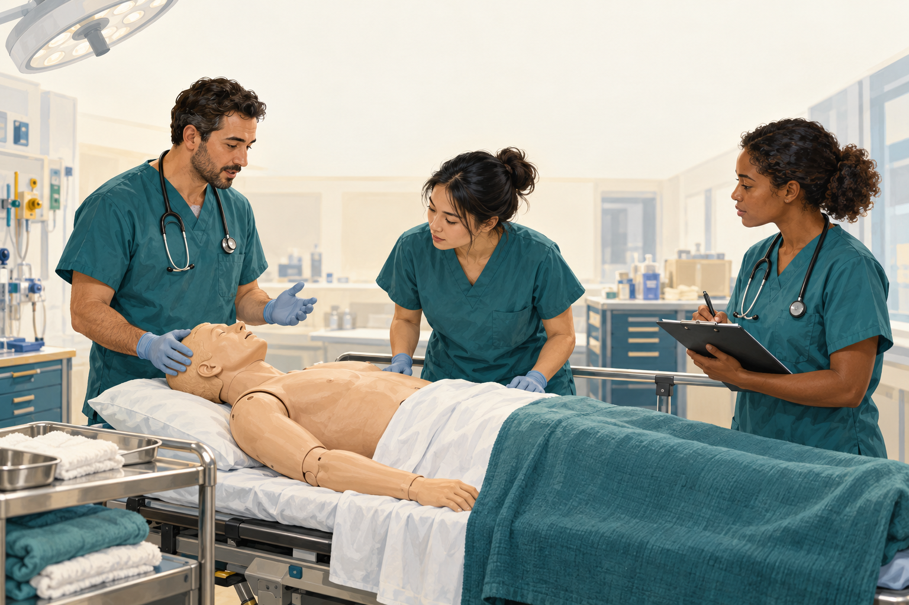
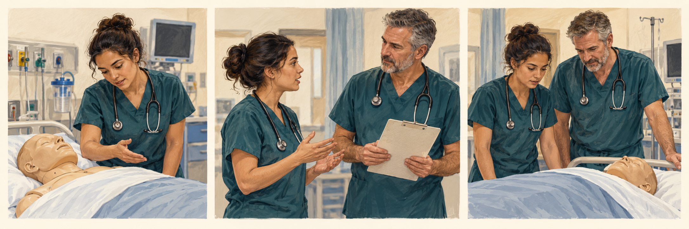

观察线索Observation cues
把每一步看成可报告事实。Treat each step as reportable facts.
待审核Pending review本课把 xABCDE 作为组织创伤信息的共同语言：先看明显威胁，再把气道、呼吸、循环、神经、暴露与再评估连成团队心智模型。This course treats xABCDE as shared language for organizing trauma information: visible threats first, then airway, breathing, circulation, disability, exposure, and reassessment as a team mental model.

同一门课支持快速复习、系统学习和病例推演。先选模式，再进入对应深度。The same course supports quick review, systematic learning, and case reasoning. Choose the mode before choosing depth.
用一张总览图回忆 x-A-B-C-D-E 与复评循环。Use one overview map to recall x-A-B-C-D-E and reassessment.
来源可查Source indexed 系统学习模式System Learning从 x 和 A 两个完整示范开始，学习“看图思考、判断、复评”。Start with full x and A examples: look, reason, judge, reassess.
待审核Pending review 病例推演模式Case Reasoning逐步释放院前、到院、初评和复评信息，练习信息整合与动态复评。Release prehospital, arrival, primary survey, and reassessment data step by step.
教学示意Teaching schematic把六个字母变成观察、报告、团队行动和复评的循环。Turn six letters into a loop of observation, reporting, team action, and reassessment.
立即威胁由团队并行处理；发现变化就重新排序。Teams address immediate threats in parallel; new changes trigger reprioritisation.

↺ 检查后、团队干预后、转运后，再回到 xABCDE。↺ Return to xABCDE after tests, team interventions and transfer.
图中为独立合成教学场景，不是同一患者的临床时序。Illustrations are independent synthetic teaching scenes, not a clinical patient timeline.把每一步看成可报告事实。Treat each step as reportable facts.
待审核Pending review青年医生负责识别、报告和协助。Early clinicians identify, report, and assist.
待审核Pending review资源和检查信息是否改变风险排序。Whether resource and test information changes risk order.
待审核Pending review住院医师和实习医生常有疾病理论，却缺少进入抢救室后组织信息的方法。xABCDE 在本课件中不是处置算法，而是观察顺序、报告语言、团队协作和复评意识。Residents and interns may know disease theory but lack a method for organizing information in the trauma bay. In this courseware, xABCDE is not a treatment algorithm; it is observation order, reporting language, teamwork, and reassessment awareness.
本页不提供如果-那么的床旁指令，不替代上级医生和本地流程。This page does not provide if-then bedside instructions and does not replace senior clinicians or local policy.
骨盆、颅脑、胸部、腹部和多发伤模块都会回到同一套语言。Pelvis, TBI, chest, abdomen, and polytrauma modules all return to the same language.
初学者核心任务是识别风险、准确报告、协助准备、知道何时请上级。The learner's core work is recognizing risk, reporting accurately, assisting preparation, and knowing when to escalate.
ATLS/ETM 和本地流程相关表述需合法来源核验和医生终审。ATLS/ETM and local workflow statements require legal source verification and clinician signoff.
观察床边、衣物与敷料，把位置、范围和变化说清楚。Observe bedspace, clothing and dressings; report location, extent and change.
可见污染、敷料变化、床边痕迹。Visible soiling, dressing change, bedspace cues.
描述位置、变化和不确定点。State location, change, and uncertainty.
新发现是否改变优先级。Whether new findings change priority.
仅帮助记住观察与沟通任务；不能证明出血严重度、气道是否通畅、通气或灌注是否有效、神经状态或处置安全性。判断要回到动态查体、真实监测和具备资质的团队。It cues observation and communication only. It cannot establish bleeding severity, airway patency, effective ventilation/perfusion, neurological status or procedural safety. Judgement requires serial examination, actual monitoring and a qualified team.
观察说话、气道声音与面颈部线索，确认团队保护与协作状态。Observe speech, airway sounds and face/neck cues; confirm team protection and coordination.
声音、面颈部、保护状态。Voice, face or neck cues, protection status.
用中性语言报告风险线索。Report risk cues in neutral language.
上级、气道团队、本地流程。Senior clinician, airway team, local pathway.
仅帮助记住观察与沟通任务；不能证明出血严重度、气道是否通畅、通气或灌注是否有效、神经状态或处置安全性。判断要回到动态查体、真实监测和具备资质的团队。It cues observation and communication only. It cannot establish bleeding severity, airway patency, effective ventilation/perfusion, neurological status or procedural safety. Judgement requires serial examination, actual monitoring and a qualified team.
观察动态胸廓运动、呼吸努力，并结合氧合与通气趋势报告。Observe dynamic chest movement and breathing effort, integrating oxygenation and ventilation trends.
胸廓、呼吸努力、肤色趋势。Chest movement, breathing effort, color trend.
报告表现和趋势，不下结论。Report appearance and trend, not conclusions.
床旁影像与团队讨论。Bedside imaging and team discussion.
仅帮助记住观察与沟通任务；不能证明出血严重度、气道是否通畅、通气或灌注是否有效、神经状态或处置安全性。判断要回到动态查体、真实监测和具备资质的团队。It cues observation and communication only. It cannot establish bleeding severity, airway patency, effective ventilation/perfusion, neurological status or procedural safety. Judgement requires serial examination, actual monitoring and a qualified team.
把肤色、脉搏、意识及灌注趋势放回整体风险，继续关注隐匿出血。Integrate skin, pulse, mental status and perfusion trends, remaining alert to occult bleeding.
肤色、脉搏趋势、意识变化。Color, pulse trend, mental-status change.
把担心说成风险地图。Frame concern as a risk map.
血库、影像、介入/手术团队讨论。Blood bank, imaging, IR/surgical team discussion.
仅帮助记住观察与沟通任务；不能证明出血严重度、气道是否通畅、通气或灌注是否有效、神经状态或处置安全性。判断要回到动态查体、真实监测和具备资质的团队。It cues observation and communication only. It cannot establish bleeding severity, airway patency, effective ventilation/perfusion, neurological status or procedural safety. Judgement requires serial examination, actual monitoring and a qualified team.
比较意识、反应和瞳孔的新变化；单一线索不直接等于诊断。Compare changes in consciousness, response and pupils; one cue is not a diagnosis.
意识、反应、瞳孔、新变化。Consciousness, response, pupils, new changes.
报告“变化了什么”。Report what changed.
神经变化是否影响 A/B/C。Whether neurologic change affects A/B/C.
仅帮助记住观察与沟通任务；不能证明出血严重度、气道是否通畅、通气或灌注是否有效、神经状态或处置安全性。判断要回到动态查体、真实监测和具备资质的团队。It cues observation and communication only. It cannot establish bleeding severity, airway patency, effective ventilation/perfusion, neurological status or procedural safety. Judgement requires serial examination, actual monitoring and a qualified team.
寻找遗漏损伤，同时确认隐私、保暖与环境；新发现可改变优先级。Look for missed injury while checking privacy, warmth and environment; new findings may change priorities.
遗漏伤、环境风险、保暖状态。Missed injury, environment risk, warmth status.
说明新发现和已查看区域。State new findings and checked areas.
是否需要回到 x/A/B/C/D。Whether to revisit x/A/B/C/D.
仅帮助记住观察与沟通任务；不能证明出血严重度、气道是否通畅、通气或灌注是否有效、神经状态或处置安全性。判断要回到动态查体、真实监测和具备资质的团队。It cues observation and communication only. It cannot establish bleeding severity, airway patency, effective ventilation/perfusion, neurological status or procedural safety. Judgement requires serial examination, actual monitoring and a qualified team.
框架建立优先级；先描述可见事实，再把它们放回呼吸与循环趋势。The framework establishes priorities. Describe visible findings before linking them to breathing and circulation.

胸片不单独证明张力生理；血流动力学或严重呼吸受损要结合临床。不是本课患者的胸片。The film alone does not establish tension physiology; assess haemodynamics and severe respiratory compromise clinically. It is not the course patient’s film.
User "Clinical Cases" (clinicalcases.org) · CC BY-SA 2.5 · Original source / 原图出处
Left pneumothorax. This X-ray is used on clinicalcases.org to illustrate a fictional case history of tension pneumothorax. Note the large, well-demarcated area devoid of lung markings, the tracheal deviation and movement of the heart away from the affected side. There is also small pleural effusion
Pneumothorax CXR — left pneumothorax used to illustrate tension pneumothorax ·
保留原图；网页仅按比例显示。读图释义由课程另写，不是原作者诊疗结论。Original image retained and displayed proportionally. Teaching interpretation is separate from the original clinical conclusions.

不能说明液体成分、出血来源、总量或速度。阴性 FAST 不排除腹腔、腹膜后或骨盆损伤。It cannot establish fluid composition, bleeding source, total volume or rate. Negative FAST does not exclude abdominal, retroperitoneal or pelvic injury.
Drahreg01（Wikimedia Commons 用户，本人作品） · CC BY-SA 3.0 · Original source / 原图出处
Ultrasound-image of Morison's Pouch with some fluid
Wikimedia Commons 文件：Ultrasound-image of Morison's Pouch with some fluid（无图号；原文件名 Morison003.jpg） · Wikimedia Commons 文件：Ultrasound-image of Morison's Pouch with some fluid（无图号；原文件名 Morison003.jpg）
保留原图；网页仅按比例显示。读图释义由课程另写，不是原作者诊疗结论。Original image retained and displayed proportionally. Teaching interpretation is separate from the original clinical conclusions.
xABCDE 是共同语言；危及生命的出血与其他立即威胁由团队并行组织，不是做完一项才允许开始下一项。xABCDE provides shared language. Teams coordinate life-threatening bleeding and other immediate threats in parallel, rather than requiring one task to finish before another starts.
疑似张力生理结合临床严重度；FAST 只提供有限的液体信息，不能单独关闭出血假设。Assess suspected tension physiology using clinical severity; FAST offers limited fluid information and cannot independently close the bleeding hypothesis.
报告变化、未解问题和下一复评时点；检查后、干预后和转运后重新对比。Report changes, unresolved questions and the next reassessment point; compare again after tests, interventions and transport.
不能。继续寻找其他来源，结合灌注变化和下一步诊断或控制出血路径。No. Continue assessing other sources and perfusion changes while planning appropriate diagnostic or haemorrhage-control steps.
真实公开图用于观察训练；病例与指南各自标明来源，病例报告不能单独建立普遍治疗规则。临床适用性仍待教师逐项复核。Public images support observation training. Case reports and guidelines are distinguished; a case report alone cannot establish a general treatment rule. Clinical applicability remains pending teacher review.
AI 合成教学场景；请回答观察任务，勿当作真实患者证据。AI-generated training context: answer the observation task, not a patient-evidence question.
这张图只回答一个问题：哪些可见出血线索需要先被团队听见？This image answers one question: which visible bleeding cues must the team hear first?学习者先说事实：位置、范围、是否变化、哪些仍不确定。不要把观察直接说成治疗指令。Learners first state facts: location, extent, change, and uncertainty. Do not turn observation into a treatment command.
外部可见线索可提示正在丢失循环容量，但严重程度需由团队结合全局判断。Visible external cues may suggest circulating volume loss, but severity is judged by the team in context.
学习者报告，具备资质团队依据指南和本地流程讨论并执行。Learners report; qualified teams discuss and act under guidelines and local policy.
新出血线索是否需要中断当前流程并重新分配角色？Does a new bleeding cue require interrupting the current flow and reallocating roles?
团队处置后，观察出血、皮肤灌注、意识和趋势是否改变。After team action, observe whether bleeding, perfusion, mental status, and trends changed.
AI 合成教学场景；请回答观察任务，勿当作真实患者证据。AI-generated training context: answer the observation task, not a patient-evidence question.
这张图只回答一个问题：患者能否维持气道保护，同时团队如何保持颈椎保护语言？This image answers one question: can the patient maintain airway protection while the team preserves c-spine language?本课训练的是低年资医生如何报告气道风险，不提供气道操作步骤、器械规格或用药方案。This course trains early clinicians to report airway risk, not airway procedure steps, device sizes, or drug plans.
声音、体位、面颈部线索、污染风险和颈椎保护状态。Voice, posture, face or neck cues, contamination concern, and c-spine protection status.
只描述可观察发现；具体检查和操作由上级团队主导。Describe observable findings; specific exam and procedures are senior-team led.
声音或意识变化、污染风险、面颈部变化都应触发报告和复评。Voice or mental-status change, contamination concern, and face/neck changes should trigger reporting and reassessment.
团队处置后，回看氧合、通气、意识和颈椎保护语言是否仍一致。After team action, revisit oxygenation, ventilation, mental status, and c-spine communication.
合成教学病例 · 非真实病历。逐条释放是学习节奏，临床立即威胁需要并行处理；选择题不会改写患者生理或评分系统。Synthetic teaching case, not a patient record. Staged release structures learning; immediate threats need parallel care. Choices do not alter physiology or external scoring.
交通碰撞后胸痛、气促与左大腿痛约25分钟（院前预警时）。Chest pain, dyspnoea and left-thigh pain for about 25 min at pre-alert.
32岁男性，系安全带驾驶员，车辆侧向撞击；目击者报告短暂意识不清，持续时间不详。过敏、既往史、药物与末次进食待核实。A 32-year-old restrained driver in a side-impact collision; witnesses report brief unresponsiveness of unknown duration. Allergies, history, medications and last meal need verification.
气道观察、吸氧、左大腿伤口加压敷料、临时固定、脊柱保护、保暖、静脉通路和快速转运；未报告胸腔减压或输血。Airway observation, oxygen, thigh pressure dressing, temporary immobilisation, spinal precautions, warmth, IV access and prompt transfer; no reported decompression or transfusion.
胸痛7/10、短句、湿冷；右胸起伏减弱与呼吸音低，左大腿肿胀伤口、腹部压痛和安全带痕；CRT约4秒。GCS14（E4V4M6），瞳孔等大对光反应存在。Pain 7/10, short phrases and cool clammy skin; reduced right excursion/breath sounds, swollen wounded left thigh, abdominal tenderness and seat-belt mark; CRT about 4 s. GCS14 (E4V4M6), equal reactive pupils.
HR126次/min；BP88/56 mmHg；RR32次/min；SpO₂92%（面罩6 L/min）；T35.5℃。这是初评时点，不是每读一张卡就新增测量。HR126/min; BP88/56 mmHg; RR32/min; SpO₂92% on face-mask oxygen 6 L/min; T35.5°C. One survey time, not a new measurement with each card.
框架参考公开来源；本课程不是ATLS官方课程，临床内容待教师终审。Framework uses public sources; this is not an official ATLS course. Clinical teacher review remains pending. ATLS 11 · WSES–AAST 2025 · European bleeding guideline 2023 · Recommendations 9–10
每个病种页均按“机制—动态查体—监护趋势—影像讨论—循证处置—复评”深化，不再只停留在四个通用学习窗口。Each disease page now deepens the shared frame through mechanism, dynamic examination, monitoring trends, imaging discussion, evidence-based management, and reassessment.
C/E：机制、隐匿出血、连续灌注、FAST 边界和资源协作。C/E: mechanism, occult bleeding, serial perfusion, FAST limits, and resource coordination.
A/D：连续神经查体、继发性损伤、影像边界和团队升级。A/D: serial neurologic examination, secondary injury, imaging limits, and escalation.
B：受伤机制、反常运动、四阶段呼吸轨迹、影像讨论与处置框架。B: mechanism, paradoxical motion, four-stage respiratory trajectory, imaging, and management.
C/E：连续腹部查体、灌注趋势、FAST/CT 边界和分层处置。C/E: serial abdominal examination, perfusion trends, FAST/CT limits, and stratified management.
三张同步地图、并行任务、出血/凝血复评和资源冲突。Synchronized maps, parallel tasks, hemorrhage/coagulation reassessment, and resource conflicts.
真实经验脱敏后作为教师预览病例，训练 A/D/E 与交接后复评。A de-identified experience used as a teacher-preview case for A/D/E and post-handoff reassessment.
课程作为模拟前思维预热；确定性评分仍由原系统负责。Courseware warms up reasoning before simulation; deterministic scoring remains in the original system.
scoring unchanged把 xABCDE 当成背诵顺序，而不是循环再评估框架。Treating xABCDE as a memorized order rather than a reassessment framework.
应当这样想Use this reasoning持续复评，立即威胁由团队并行处理。Reassess continuously; teams address immediate threats in parallel.
过早固定诊断，忽视新信息和趋势变化。Anchoring early on a diagnosis while missing new information and trends.
应当这样想Use this reasoning同时说出已知事实、未解问题和改变判断的新信息。State known facts, unresolved questions and new information that changes judgement.
把初学者的“行动”误解为独立治疗，而不是报告、协助、准备和让开工作空间。Misreading learner “action” as independent treatment rather than reporting, assisting, preparing, and clearing workspace.
应当这样想Use this reasoning在监督和能力范围内报告、协助、准备，并明确下一次复评。Report, assist and prepare within supervision and competence; identify the next reassessment.
CLAIM-TRAUMA-ACADEMY-002-ATLS-XABCDE-FRAMEWORKxABCDE 教学框架待 ACS ATLS 11 公开页面和合法课程资料核验。The xABCDE teaching frame awaits review against the ACS ATLS 11 public page and legally available course material.
来源可查Source indexedsource_index_pending_reviewCLAIM-TRAUMA-ACADEMY-002-TEAM-REASSESSMENT团队并行任务和复评语言待 ETM/本地培训来源审核。Parallel-team-task and reassessment wording awaits ETM/local training source review.
待审核Pending reviewevidence_review_required